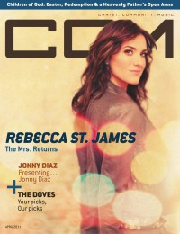

CCM Digital, Apr 2011
| Cover |
|---|
|  |
 Online Exclusively Online Exclusively |
| Writers in this Issue |
| Argyrakis, Andy Aspinwall, Grace S. Assad, Audrey Conner, Matt Crosse, Clay Ferguson, Rachel Greer, Andrew Hoernschemeyer, Emily Jackson, Tom Lusk, Caroline Riddle, Melissa Shaver, Rachel Webb, Derek |
Rebecca Saint James
Cover Feature:- "Lifting Open Hands to You my Savior, Beautify my Soul"
- "42nd Annual Dove Awards" by Andy Argyrakis, Caroline Lusk, Grace S. AspinwallDove Awards, truncated nominees list & picks
- "Presenting Jonny Diaz" by Caroline Lusk
- "Our God Is Near" by Melissa Riddle
Worship:
- "Harmonic Love" by Emily Hoernschemeyer
- "Anthem Lights"
- "The Happy World Voice Day!" by Rachel Ferguson
- Drew Holcomb by Andrew Greer
- Kirk Franklin by Andrew Greer
- Benjamin Dunn by Matt Conner
- FM Static by Andy Argyrakis
- Katelynne Cox by Andy Argyrakis
- "Thoughts on Inspiration -- Part 3: Discovery" by Audrey Assad
Reviews & New Releases:
- Luminate - Come Home by Andy Argyrakis
- Gateway Worship - God Be Praised by Matt Conner
- Brian Doerksen - Level Ground by Grace S. Aspinwall
- Rebecca Saint James - I Will Praise You by Andrew Greer
- Justin Unger - Some Good Advice by Andrew Greer
- Tenth Avenue North - Live: Inside & In Between by Andrew Greer
- FM Static - My Brain Says Stop, But My Heart Says Go! by Matt Conner
- Abandon - Control by Andrew Greer
- Brandon Bee - Inside These Walls by Andy Argyrakis
- Out of Hiding - When Hope Speaks EP by Andrew Greer
- Debbie Forrest - The Train Song by Matt Conner
- After Edmund - Times Have Changed by Andy Argyrakis
- various artists - WOW Gospel 2011 by Andrew Greer
- John P. Kee - The Legacy Project by Andrew Greer
- James Fortune & FIYA - I Believe LIVE by Andrew Greer
- Al Green - The Best of the Gospel Sessions by Andrew Greer
- various artists - Mr. Bolin's Late Night Revival by Andy Argyrakis
- Danielson Familie - Best of Gloucester County by Matt Conner
- Amos Lee - Mission Bell by Andy Argyrakis
- "The Valley Tour, Lincoln Hall, Chicago, IL" by Andy Argyrakis
- Martin Smith, Craig Borlase - Delirious: My Journey with the Band, a Growing Family, and an Army of Historymakers
- "Our Father In Heaven" by Derek Webb, Rachel Shaver
- "Children of God: Easterly Redemption and a Heavenly Father's Open Arms" by Caroline Luskphoto feature, CCM artists adopting children
- "An Easter Dream Come True"
- "You Might Want to Sit Down for This" by Tom Jackson
Relevant Links
For more information about CCM Digital visit .This issue is available exclusively online.
© 2011 CMnexus. Last updated September 2019. Contact: editor -AT- cmnexus -DØT- org About